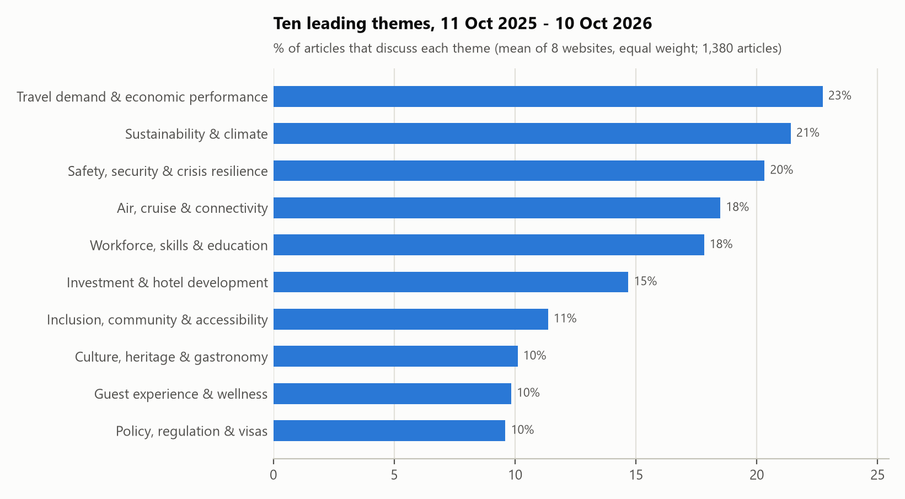
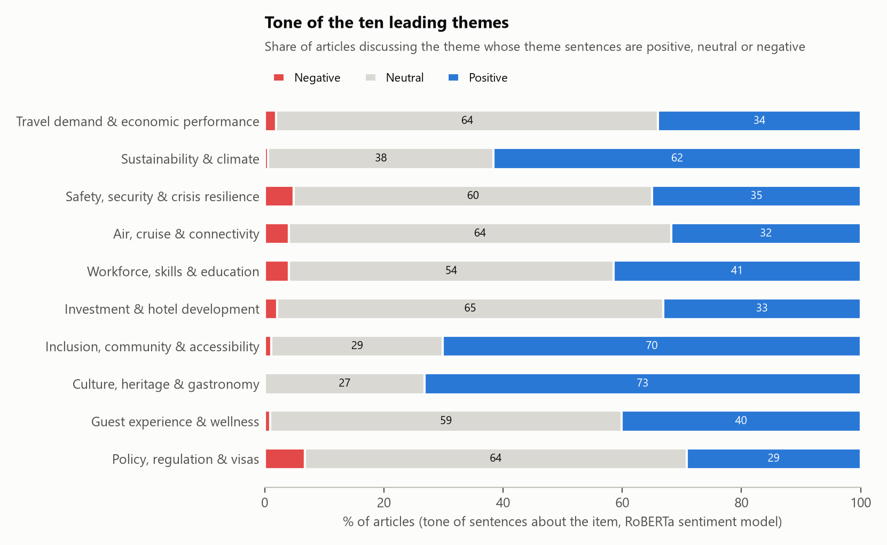
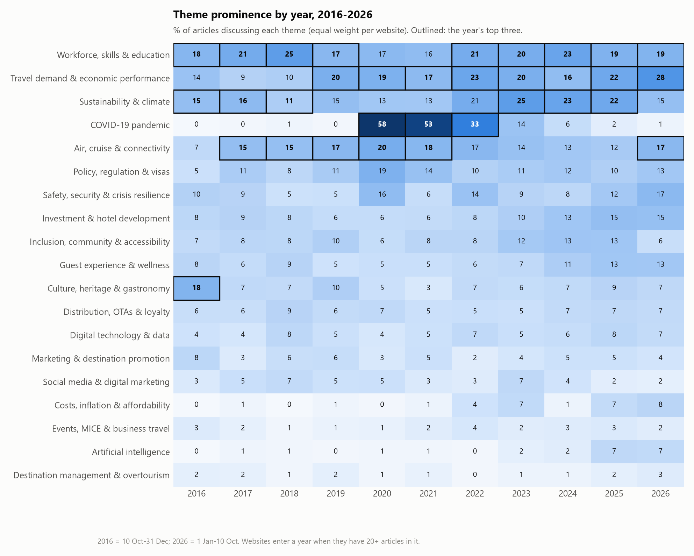
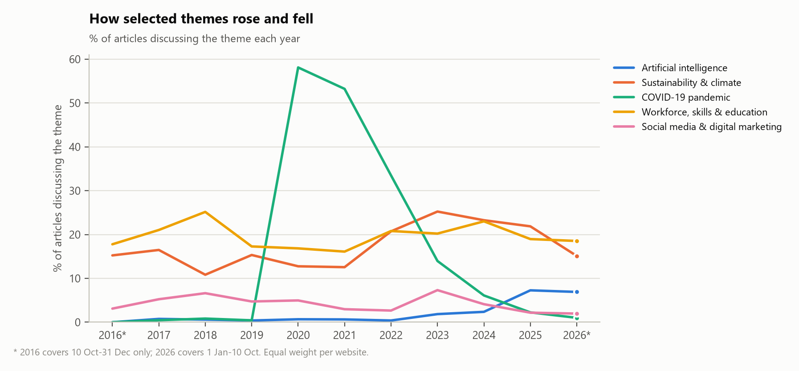
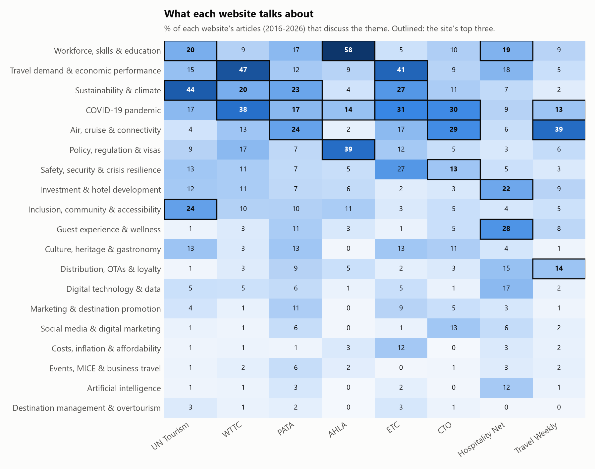
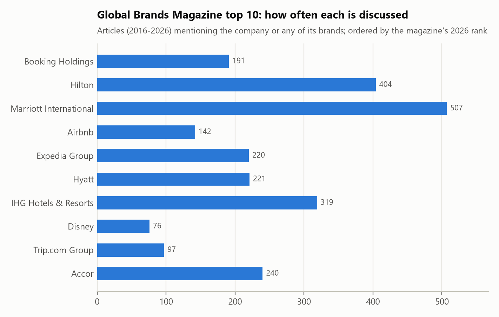
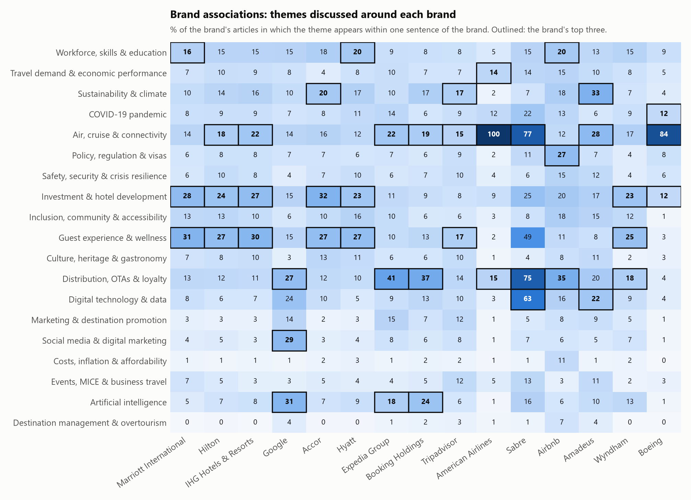
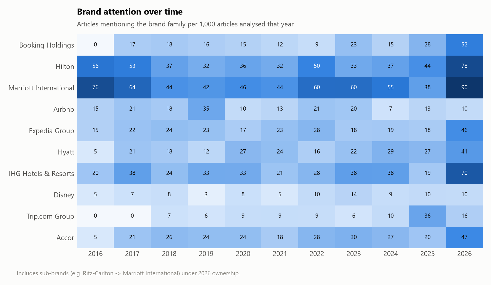
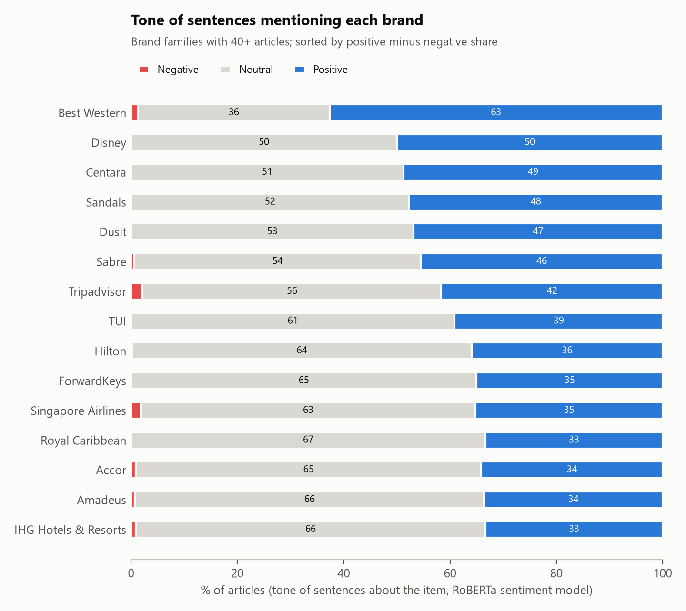
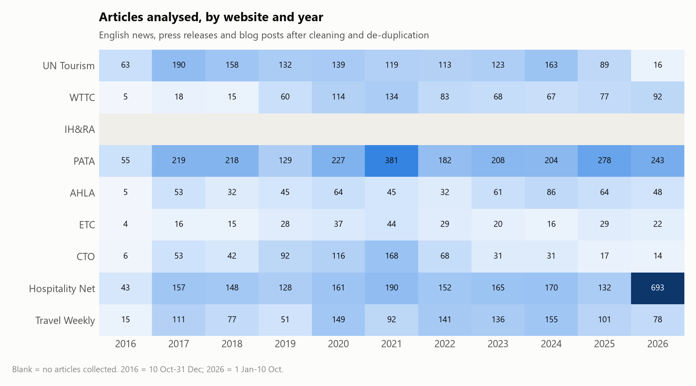

Research assistant report
Themes, trends and brands in nine industry websites, 10 October 2016 – 10 October 2026
This report analyses 9,060 English-language articles published between 10 October 2016 and 10 October 2026 by 8 of the nine tourism and hospitality organisations and trade publishers named in the brief. It answers four questions: which themes dominate the current industry discussion and in what tone; how the leading themes changed year by year; what each website's community focuses on; and which brands are discussed and what they are associated with. Section 2 explains how the data were collected and analysed.
The study covers the nine websites named in the brief: three intergovernmental or regional tourism bodies (UN Tourism, the European Travel Commission and the Caribbean Tourism Organization), four industry associations (WTTC, IH&RA, PATA and AHLA) and two trade-media publishers (Hospitality Net and Travel Weekly). The brief mentions ten websites but lists nine; the Global Brands Magazine page is used as the reference list of brands rather than as a tenth source. The study period runs from 10 October 2016 to 10 October 2026 (ten years), restricted to English-language news articles, press releases and blog posts. Reports, report landing pages, event listings, directories and membership pages were excluded from the analysis. “Current” refers to the last twelve months of the period: 11 October 2025 to 10 October 2026.
| Website | Type | Articles analysed | Of which current | Years | % from web archive |
|---|---|---|---|---|---|
| UN Tourism | Intergovernmental body | 1305 | 41 | 2016–2026 | 0.0 |
| WTTC | Industry association | 733 | 99 | 2016–2026 | 10.6 |
| IH&RA | Industry association | 0 | 0 | – | 0.0 |
| PATA | Industry association | 2344 | 307 | 2016–2026 | 26.2 |
| AHLA | Industry association | 535 | 60 | 2016–2026 | 47.9 |
| European Travel Commission | Industry association | 260 | 29 | 2016–2026 | 0.0 |
| Caribbean Tourism Organization | Industry association | 638 | 20 | 2016–2026 | 100.0 |
| Hospitality Net | Trade media | 2139 | 720 | 2016–2026 | 0.0 |
| Travel Weekly | Trade media | 1106 | 104 | 2016–2026 | 100.0 |
Articles were collected automatically with a purpose-built Python crawler that identifies itself as an academic research tool, waits at least three seconds between requests to the same website, honours rate-limit responses and records every request. Collection is resumable, and each saved document keeps its source URL, retrieval time and raw copy for checking. Three routes were used, chosen per website according to what each site makes available:
In total 11,528 documents were collected, of which 9,060 articles from 8 websites are analysed (about 30% retrieved from the web archive). IH&RA could not contribute: its website contains no original news in the study period, and the “News” page of its former site (ih-ra.org) only republished short Hospitality Net headlines. This gap is reported rather than filled with other material.
For each page the headline, publication date and main text were extracted, using the publisher's structured metadata where present and site-specific rules otherwise. Navigation, contact details, “about us” boilerplate and social-media footers were removed. A document entered the analysis only if it was in English, had a verifiable publication date inside the study period and contained at least 120 words of text. Duplicates were removed in two steps: identical texts, then near-identical versions of the same story (cosine similarity of 0.94 or more on TF-IDF word vectors), so that a press release republished on several pages counts once per website and year. Of the 9,389 documents that passed these checks, 9,060 unique articles remain.
Themes were measured with a transparent dictionary (codebook version 1.1, Appendix A) of 19 themes, each defined by a list of words and phrases — for example sustainability, carbon, net zero, biodiversity for “Sustainability & climate” or artificial intelligence, generative AI, machine learning, chatbot for “Artificial intelligence”. The list started from the examples in the brief (sustainability, AI, social media) and the tourism literature, and was refined by reading samples of matched and unmatched articles and by comparing it with themes found without a dictionary (section 2.7). Generic institutional activity such as partnerships and memoranda of understanding is not counted as a theme. After the validation reading (section 2.7) the terms of four themes were narrowed once (codebook version 1.1): bare “jobs” and “employment”, which mostly occur in economic-impact statements, no longer count as workforce discussion, and generic words such as “culture” (as in company culture), “connectivity” and “diversity” were replaced by more specific phrases.
Because a single passing mention does not make an article about a theme, an article counts as discussing a theme only when a theme term appears in the headline, appears at least twice in the opening 80 words, or appears at least three times using at least two different terms. An article can discuss several themes. The basic measure is the share of articles discussing each theme. Because the websites publish very different volumes, shares are calculated within each website first and then averaged with equal weight per website (only websites with at least 20 articles in the period concerned are included). This stops the largest publishers from determining the overall picture.
Sentiment was measured with a transformer language model trained for three-class sentiment classification (twitter-roberta-base-sentiment-latest, Loureiro et al. 2022), which reads each sentence in context rather than counting positive and negative words. Up to five sentences that mention a theme an article discusses were scored, and the article's tone towards that theme is the average of their negative, neutral and positive probabilities — so an article that welcomes AI but warns about job losses contributes to two themes with different tones. Sentences mentioning a brand were scored in the same way. Results are summarised as the share of articles that are positive, neutral and negative and as net sentiment (positive minus negative share). The model was chosen after testing four candidates against the validation reading described in section 2.7; the widely used VADER word-list method over-rated the positivity of business news and was rejected. Organisational communication is strongly positive by design, so differences between themes are more informative than absolute levels.
Brand mentions were counted with a dictionary of 93 brand families. It contains every company in the Global Brands Magazine list “Top 10 Tourism Brands in the World (2026)” — Booking Holdings, Hilton, Marriott International, Airbnb, Expedia Group, Hyatt, IHG Hotels & Resorts, Disney, Trip.com Group and Accor — together with their flagship sub-brands named in that article (for example Ritz-Carlton, Sheraton and Westin under Marriott International, or Agoda and KAYAK under Booking Holdings), plus other hotel companies, airlines, cruise lines, tour operators and travel-technology firms. Sub-brands are grouped under their 2026 owner. Ambiguous names (for example “Hilton Head”, “United Arab Emirates”) are filtered out. For each brand family we report the number of articles mentioning it and the websites it appears on. Associations are measured from the text around each mention (the sentence containing the brand plus one sentence either side): the share of the brand's articles in which each theme appears in that window, and the lift — how much more often the theme appears around this brand than around brands in general. We also list the words most distinctive of each brand's context (log-odds ratio with an informative Dirichlet prior, Monroe et al. 2008), the sentiment of sentences mentioning the brand, and which brands are named together in the same article.
As an independent check on the dictionary, an unsupervised topic model (TF-IDF with non-negative matrix factorisation, 20 topics, trained on a balanced sample of at most 120 articles per website and year) was fitted without any predefined themes (Appendix B). For 12 of the 20 topics, at least half of the articles in the topic discuss a single dictionary theme (for example Travel demand & economic performance, Policy, regulation & visas, COVID-19 pandemic and Workforce, skills & education), so the themes found without a dictionary largely coincide with the codebook. The remaining topics group articles by publisher-specific subjects (for example thailand, bangkok, event, time, want, booking and resort, guests, resorts) rather than by industry themes. Automated consistency checks confirm that every article lies inside the study period, that no story is counted twice for a website and year, and that all tables add up.
Validation sample. To check the automated coding, a stratified random sample of 64 articles (8 per website) was read and coded independently of the dictionary, recording which themes each article is substantially about, together with the tone of 120 randomly chosen theme sentences. Against this reading the “discussing” rule achieved a precision of 75% (share of automated assignments confirmed) and a recall of 71% (share of the reader’s themes that the rule also found); counting every passing mention instead would give a precision of only 37%. The sentiment model agreed with the reader’s positive/neutral/negative judgement for 85% of sentences (VADER: 56%). The independent reading was carried out with the help of an AI language model and should be complemented by a human check before publication. Because the codebook was revised once after this reading, these figures are partly in-sample and somewhat optimistic. Per-theme results are in tables/validation_by_theme.csv.
Figure 1 ranks the themes by the share of articles that discuss them in the last twelve months. Travel demand & economic performance, Sustainability & climate and Safety, security & crisis resilience lead, followed by Air, cruise & connectivity, Workforce, skills & education, Investment & hotel development, Inclusion, community & accessibility, Culture, heritage & gastronomy, Guest experience & wellness and Policy, regulation & visas. Table 2 also shows the share when all articles are simply pooled, which gives the high-volume trade-media sites more weight: Guest experience & wellness and Artificial intelligence then rank higher, and Safety, security & crisis resilience and Sustainability & climate lower. The equal-website ranking is used as the main result because it treats each community's agenda as equally important.

| # | Theme | % of articles (equal weight) | % of all articles pooled | Websites | % positive | % negative | Net sentiment |
|---|---|---|---|---|---|---|---|
| 1 | Travel demand & economic performance | 22.7 | 18.6 | 8 | 34.0 | 1.9 | 32.0 |
| 2 | Sustainability & climate | 21.4 | 11.9 | 8 | 61.6 | 0.6 | 61.0 |
| 3 | Safety, security & crisis resilience | 20.3 | 8.9 | 8 | 35.0 | 4.9 | 30.1 |
| 4 | Air, cruise & connectivity | 18.5 | 12.5 | 8 | 31.8 | 4.0 | 27.8 |
| 5 | Workforce, skills & education | 17.8 | 19.6 | 7 | 41.5 | 4.1 | 37.4 |
| 6 | Investment & hotel development | 14.7 | 21.0 | 7 | 33.1 | 2.1 | 31.0 |
| 7 | Inclusion, community & accessibility | 11.4 | 6.3 | 8 | 70.1 | 1.1 | 69.0 |
| 8 | Culture, heritage & gastronomy | 10.1 | 8.9 | 7 | 73.2 | 0.0 | 73.2 |
| 9 | Guest experience & wellness | 9.8 | 22.8 | 7 | 40.1 | 1.0 | 39.2 |
| 10 | Policy, regulation & visas | 9.6 | 6.5 | 5 | 29.2 | 6.7 | 22.5 |
Sentiment. Negative tone is rare for all ten themes (Figure 2): most sentences are neutral, factual reporting, and the rest is mostly positive, reflecting the promotional nature of association and trade communication. Relative differences are informative: across the whole period the most positive themes are Culture, heritage & gastronomy, Inclusion, community & accessibility and Sustainability & climate, while the least positive are Costs, inflation & affordability, COVID-19 pandemic and Policy, regulation & visas — themes that by their nature describe threats, shocks and pressures.

Figure 3 shows how prominent each theme was in each year; the outlined cells are each year's top three, and Table 3 lists the five leading themes per year. The leading theme changes in clear phases — 2016: Culture, heritage & gastronomy; 2017–2018: Workforce, skills & education; 2019: Travel demand & economic performance; 2020–2022: COVID-19 pandemic; 2023–2025: Sustainability & climate; 2026: Travel demand & economic performance. COVID-19 was the leading theme in 2020–2022, peaking at 58% of articles in 2020, and remained visible through the recovery period as “post-pandemic” recovery language. Sustainability & climate was in first or second place in 2017, 2023, 2024 and 2025.

| Year | 1st | 2nd | 3rd | 4th | 5th | Websites |
|---|---|---|---|---|---|---|
| 2016 | Culture, heritage & gastronomy | Workforce, skills & education | Sustainability & climate | Travel demand & economic performance | Safety, security & crisis resilience | 3 |
| 2017 | Workforce, skills & education | Sustainability & climate | Air, cruise & connectivity | Policy, regulation & visas | Travel demand & economic performance | 6 |
| 2018 | Workforce, skills & education | Air, cruise & connectivity | Sustainability & climate | Travel demand & economic performance | Guest experience & wellness | 6 |
| 2019 | Travel demand & economic performance | Workforce, skills & education | Air, cruise & connectivity | Sustainability & climate | Policy, regulation & visas | 8 |
| 2020 | COVID-19 pandemic | Air, cruise & connectivity | Travel demand & economic performance | Policy, regulation & visas | Workforce, skills & education | 8 |
| 2021 | COVID-19 pandemic | Air, cruise & connectivity | Travel demand & economic performance | Workforce, skills & education | Policy, regulation & visas | 8 |
| 2022 | COVID-19 pandemic | Travel demand & economic performance | Workforce, skills & education | Sustainability & climate | Air, cruise & connectivity | 8 |
| 2023 | Sustainability & climate | Workforce, skills & education | Travel demand & economic performance | Air, cruise & connectivity | COVID-19 pandemic | 8 |
| 2024 | Sustainability & climate | Workforce, skills & education | Travel demand & economic performance | Inclusion, community & accessibility | Investment & hotel development | 7 |
| 2025 | Sustainability & climate | Travel demand & economic performance | Workforce, skills & education | Investment & hotel development | Inclusion, community & accessibility | 7 |
| 2026 | Travel demand & economic performance | Workforce, skills & education | Air, cruise & connectivity | Safety, security & crisis resilience | Sustainability & climate | 6 |
Comparing the three years before the pandemic (2017–19) with the three most recent full years (2023–25) shows which concerns have grown (Table 4). The largest increases are in Sustainability & climate (+9 points), Travel demand & economic performance (+6 points), Investment & hotel development (+5 points) and Costs, inflation & affordability (+4 points); the largest decreases in Air, cruise & connectivity (-3 points), Social media & digital marketing (-1 points) and Culture, heritage & gastronomy (-1 points). Figure 4 traces selected themes: artificial intelligence was discussed in at most 0.8% of articles in any year before 2023 and reached 7% in 2026, while the pandemic theme rose to 58% in 2020 and fell to 6% or less from 2024.

| Theme | 2017–19 (% of articles) | 2023–25 (% of articles) | Change (points) |
|---|---|---|---|
| Sustainability & climate | 14.2 | 23.5 | 9.2 |
| COVID-19 pandemic | 0.6 | 7.4 | 6.9 |
| Travel demand & economic performance | 13.2 | 19.2 | 5.9 |
| Investment & hotel development | 7.7 | 12.9 | 5.1 |
| Costs, inflation & affordability | 0.6 | 4.8 | 4.2 |
| Inclusion, community & accessibility | 8.7 | 12.8 | 4.1 |
| Guest experience & wellness | 6.6 | 10.2 | 3.7 |
| Safety, security & crisis resilience | 6.2 | 9.6 | 3.4 |
| Artificial intelligence | 0.6 | 3.8 | 3.2 |
| Events, MICE & business travel | 1.2 | 2.7 | 1.5 |
| Policy, regulation & visas | 10.0 | 11.2 | 1.3 |
| Digital technology & data | 5.4 | 6.3 | 0.9 |
| Destination management & overtourism | 1.5 | 1.3 | -0.2 |
| Marketing & destination promotion | 4.7 | 4.4 | -0.4 |
| Workforce, skills & education | 21.2 | 20.7 | -0.4 |
| Distribution, OTAs & loyalty | 6.9 | 6.3 | -0.6 |
| Culture, heritage & gastronomy | 8.1 | 7.2 | -0.8 |
| Social media & digital marketing | 5.5 | 4.5 | -1.0 |
| Air, cruise & connectivity | 15.9 | 12.9 | -3.0 |
Robustness: because not every website covers every year, the yearly figures were recalculated using only the websites present in every year from 2017 to 2025 (UN Tourism; PATA; AHLA; Hospitality Net; Travel Weekly). The leading theme is the same in 5 of 11 years and at least two of the top three themes are the same in 10 of 11 years; the differences come mainly from leaving out WTTC, ETC and CTO, whose agendas are distinctive (results in the workbook, sheet 9).
The websites serve different communities and their agendas differ accordingly (Figure 5, Table 5). The ratio in the last column shows the themes each site discusses much more than the others do — a summary of what makes each community distinctive.

| Website | Articles | Leading theme | Second | Third | Most distinctive (× other sites) |
|---|---|---|---|---|---|
| UN Tourism | 1305 | Sustainability & climate (44%) | Inclusion, community & accessibility (24%) | Workforce, skills & education (20%) | Inclusion, community & accessibility (3.6x); Sustainability & climate (3.3x); Culture, heritage & gastronomy (2.1x) |
| WTTC | 733 | Travel demand & economic performance (47%) | COVID-19 pandemic (38%) | Sustainability & climate (20%) | Travel demand & economic performance (3.0x); COVID-19 pandemic (2.0x); Policy, regulation & visas (1.4x) |
| PATA | 2344 | Air, cruise & connectivity (24%) | Sustainability & climate (23%) | COVID-19 pandemic (17%) | Marketing & destination promotion (3.2x); Culture, heritage & gastronomy (2.0x); Guest experience & wellness (1.6x) |
| AHLA | 535 | Workforce, skills & education (58%) | Policy, regulation & visas (39%) | COVID-19 pandemic (14%) | Workforce, skills & education (4.6x); Policy, regulation & visas (4.5x); Inclusion, community & accessibility (1.3x) |
| ETC | 260 | Travel demand & economic performance (41%) | COVID-19 pandemic (31%) | Sustainability & climate (27%) | Costs, inflation & affordability (8.4x); Safety, security & crisis resilience (3.2x); Travel demand & economic performance (2.5x) |
| CTO | 638 | COVID-19 pandemic (30%) | Air, cruise & connectivity (29%) | Safety, security & crisis resilience (13%) | Social media & digital marketing (5.3x); Air, cruise & connectivity (2.0x); Culture, heritage & gastronomy (1.6x) |
| Hospitality Net | 2139 | Guest experience & wellness (28%) | Investment & hotel development (22%) | Workforce, skills & education (19%) | Artificial intelligence (9.3x); Guest experience & wellness (6.0x); Digital technology & data (4.6x) |
| Travel Weekly | 1106 | Air, cruise & connectivity (39%) | Distribution, OTAs & loyalty (14%) | COVID-19 pandemic (13%) | Air, cruise & connectivity (2.9x); Distribution, OTAs & loyalty (2.6x); COVID-19 pandemic (0.6x) |
Figure 6 shows how often each company in the Global Brands Magazine 2026 top ten is discussed, counting any of its brands. Table 6 adds the websites where they appear, the themes discussed around them and the tone of those sentences. Companies are named most often on Travel Weekly (61% of articles) and Hospitality Net (51% of articles) and least often on UN Tourism (11%) and ETC (8%).

| GBM rank | Brand | Articles | Websites | Themes discussed around the brand (share of its articles, lift) | Net sentiment |
|---|---|---|---|---|---|
| 1 | Booking Holdings | 191 | 8 | Distribution, OTAs & loyalty (37%, 2.0x); Artificial intelligence (24%, 3.0x); Air, cruise & connectivity (19%, 0.6x) | 17.3 |
| 2 | Hilton | 404 | 8 | Guest experience & wellness (27%, 1.3x); Investment & hotel development (24%, 1.2x); Air, cruise & connectivity (18%, 0.5x) | 35.8 |
| 3 | Marriott International | 507 | 8 | Guest experience & wellness (31%, 1.5x); Investment & hotel development (28%, 1.4x); Workforce, skills & education (16%, 1.2x) | 26.6 |
| 4 | Airbnb | 142 | 8 | Distribution, OTAs & loyalty (35%, 1.9x); Policy, regulation & visas (27%, 3.6x); Investment & hotel development (20%, 1.0x) | 29.6 |
| 5 | Expedia Group | 220 | 8 | Distribution, OTAs & loyalty (41%, 2.2x); Air, cruise & connectivity (22%, 0.6x); Artificial intelligence (18%, 2.3x) | 21.4 |
| 6 | Hyatt | 221 | 7 | Guest experience & wellness (27%, 1.3x); Investment & hotel development (23%, 1.1x); Workforce, skills & education (20%, 1.5x) | 32.0 |
| 7 | IHG Hotels & Resorts | 319 | 8 | Guest experience & wellness (30%, 1.4x); Investment & hotel development (27%, 1.4x); Air, cruise & connectivity (22%, 0.6x) | 32.5 |
| 8 | Disney | 76 | 6 | Air, cruise & connectivity (28%, 0.8x); Guest experience & wellness (16%, 0.8x); Workforce, skills & education (16%, 1.1x) | 50.0 |
| 9 | Trip.com Group | 97 | 6 | Air, cruise & connectivity (32%, 0.9x); Guest experience & wellness (23%, 1.1x); Sustainability & climate (22%, 1.5x) | 27.4 |
| 10 | Accor | 240 | 7 | Investment & hotel development (32%, 1.6x); Guest experience & wellness (27%, 1.3x); Sustainability & climate (20%, 1.4x) | 33.2 |
| Brand | Sub-brands mentioned (articles) | Most distinctive words around the brand |
|---|---|---|
| Booking Holdings | Booking.com (143); Agoda (34); Booking Holdings (32); Priceline (19); OpenTable (12); KAYAK (3) | cheaper, com's, travelers, respondents, bookings, online, accommodation, reduced, commission, connected |
| Hilton | Hilton (379); Waldorf Astoria (34); Hampton (29); Curio Collection (23); DoubleTree (22); Embassy Suites (11) | chocolate, projects, rooms, bar, award-winning, fitness, amenities, fulfilling, room, hospitable |
| Marriott International | Marriott (398); Ritz-Carlton (65); Sheraton (49); Starwood (45); Westin (37); St. Regis (22) | keys, portfolio, scheduled, properties, rooms, members, select-service, earn, associates, design |
| Airbnb | Airbnb (142) | hosts, listings, short-term, rentals, tax, rental, sharing, communities, housing, homes |
| Expedia Group | Expedia (194); Hotels.com (28); Vrbo (23); Orbitz (13); trivago (13); Egencia (4) | online, websites, sites, hosts, bookings, advertising, consumers, localized, rental, research |
| Hyatt | Hyatt (217); Andaz (11); Alila (9); Thompson Hotels (7) | guestrooms, luxury, lifestyle, all-inclusive, executed, resort, culinary, openings, gastronomy, wellbeing |
| IHG Hotels & Resorts | IHG (193); InterContinental (70); Holiday Inn (62); Kimpton (33); Six Senses (30); Crowne Plaza (29) | children, rooms, pipeline, projects, broad, open, tea, manages, mainstream, globally |
| Disney | Disney (76) | parks, park, attraction, theme, attractions, film, fiscal, themed, land, ships |
| Trip.com Group | Trip.com (79); Skyscanner (25); Qunar (9) | travellers, report, travel-related, cost-effective, consisting, aggregation, apps, informed, comprising, platforms |
| Accor | Accor (174); Fairmont (32); Sofitel (20); ibis (20); Pullman (15); Novotel (14) | rooms, lifestyle, plastic, cancer, projects, courtesy, situated, women, mobility, augmented |

Read together, the association measures give a profile of each brand in industry discussion:

Other prominent names. Beyond the magazine's list, the most frequently discussed companies are Google (290), Tripadvisor (185), American Airlines (171), Sabre (167), Amadeus (134), Wyndham (117), Boeing (112), Dusit (111), JetBlue (105) and STR (94) — mostly travel-technology firms, airlines and regional hotel groups. The brands most often named together in the same article are Hilton and Marriott International (201 articles), IHG Hotels & Resorts and Marriott International (136 articles), Hyatt and Marriott International (132 articles) and Hilton and IHG Hotels & Resorts (119 articles).

Industry bodies. Among organisations other than the publisher itself, the most frequently mentioned are UN Tourism / UNWTO (328 articles), IATA (313 articles), European Commission / EU (297 articles), UNESCO (218 articles), WTTC (198 articles) and World Health Organization (140 articles) (full list in the workbook, sheet 18).
The first terms of each theme are shown as regular expressions (the full list is in output/codebook.json). Matching ignores case except for
abbreviations such as AI, OTA and MICE.
| Theme | Example terms |
|---|---|
| Sustainability & climate | sustainab\w+, climate (change|action|crisis|emergency|goals?|targets?|neutral\w*|resilience), carbon, decarboni[sz]\w+, net[ -]?zero, emissions?, biodiversity, nature[ -]positive, circular economy, green (transition|economy|recovery|hotels?|travel|tourism|investment|buildings?), renewable energy, single[ -]use plastics?, plastic (waste|pollution), food waste |
| Artificial intelligence | artificial intelligence, generative AI, gen[ -]?AI, AI, machine learning, ChatGPT, large language models?, LLMs?, chatbots?, agentic, AI[ -](powered|driven|enabled|agents?) |
| Digital technology & data | digital transformation, digiti[sz]ation, digitali[sz]ation, digital (tools?|platforms?|solutions?|innovation|identity|payments?|technolog\w+|channels?), (hotel|travel|hospitality|tourism) tech(nolog\w+)?, software, cloud[ -](based|platform|computing|solutions?), big data, data analytics, analytics, cyber\w*, biometrics?, blockchain, mobile apps? |
| Social media & digital marketing | social media, social networks?, influencers?, Instagram, TikTok, Facebook, YouTube, Twitter, WeChat, Weibo, Xiaohongshu, user[ -]generated content, content creators?, online reviews? |
| Marketing & destination promotion | marketing (campaigns?|strategy|strategies|activities|efforts), destination marketing, (tourism|destination) promotion, promotional (campaigns?|activities|events?), roadshows?, brand(ing| awareness| campaign| identity| positioning), advertising, (travel|trade|tourism) (fairs?|shows?|marts?), ITB, World Travel Market, WTM, Arabian Travel Market, fam(iliari[sz]ation)? trips?, source markets? |
| Workforce, skills & education | workforce, employees?, workers?, staffing, staff (shortages?|retention|training|members|housing), talent, recruit\w*, labou?r (shortages?|market|force|costs?|unions?), (trade|hotel|workers.?) unions?, unioni[sz]\w+, wages?, minimum wage, job (openings|vacancies|training|fairs?|seekers|losses|creation), skills? |
| Travel demand & economic performance | arrivals?, (visitor|tourist|passenger) numbers?, international tourists?, occupancy, RevPAR, ADR, average daily rates?, (travel|tourism|hotel|leisure) demand, booking (momentum|growth|volumes?|trends?), GDP, economic (impact|contribution|growth|recovery|performance), (visitor|tourism|tourist|international) (spending|spend|receipts|expenditure), record (year|numbers|levels|highs?), outbound |
| COVID-19 pandemic | COVID(-19)?, coronavirus, pandemic, lockdowns?, quarantine, vaccin\w+, social distancing, reopen\w*, restart(ing)? (of )?(tourism|travel), Safe Travels, (health|safety|hygiene) protocols?, post[ -]pandemic, Omicron, testing requirements? |
| Safety, security & crisis resilience | crisis, crises, disasters?, hurricanes?, earthquakes?, floods?, wildfires?, tsunami, terroris\w+, security, resilien\w+, emergency, conflicts?, war |
| Policy, regulation & visas | visas?, visa[ -]free, e[ -]?visas?, travel restrictions?, borders?, regulations?, regulatory, legislation, legislat(ive|ors?), congress(ional)?, senate, lawmakers, policy[ -]?makers, (public|tourism|government) polic(y|ies) |
| Investment & hotel development | investments?, investors?, infrastructure, (hotel|resort) (developments?|openings?|pipeline|projects?), construction, financing, capital (expenditure|markets?|investment), real estate, acquisitions?, acquires?, acquired, mergers?, pipeline, signings? |
| Destination management & overtourism | destination management, DMOs?, over[ -]?tourism, overcrowding, crowd management, visitor management, carrying capacity, seasonality, (visitor|tourist) dispersal, destination stewardship, tourism (planning|master plans?|strategy|strategies), destination (development|strategy|governance|competitiveness|management organi[sz]ations?), local residents, residents? (and|vs\.?|versus) (visitors|tourists) |
| Inclusion, community & accessibility | inclusi\w+, accessib\w+, gender, women, equality, diversity (and|&) inclusion, DEI, disabilit\w+, indigenous, local communit\w+, community[ -]based, empowerment, empower(ing)? (women|communities|local), poverty |
| Culture, heritage & gastronomy | cultural (heritage|tourism|experiences?|events?|sites?|diversity|attractions?|identity|programmes?|programs?|offer\w*|exchanges?|assets?), (local|national|living|indigenous|rich|vibrant) cultures?, culture (and|&) (heritage|history|arts|tourism), heritage, UNESCO, museums?, gastronom\w+, culinary, food tourism, cuisine, wine tourism, festivals?, arts and culture, handicrafts? |
| Guest experience & wellness | guest experiences?, customer experiences?, personali[sz]\w+, guest satisfaction, service quality, luxury, wellness, well[ -]?being, spas?, medical tourism, experiential, authentic experiences?, amenities, guest (needs|expectations|journey) |
| Air, cruise & connectivity | airlines?, aviation, airports?, air (connectivity|routes?|capacity|service|travel|transport|lift), flights?, cruise\w*, rail(ways?)?, high[ -]speed rail, train (travel|services?|stations?|routes?), (air|airline|flight|route) connectivity, ferr(y|ies) |
| Distribution, OTAs & loyalty | online travel agen\w+, OTAs?, travel (agents?|advisors?|agencies), tour operators?, distribution, direct bookings?, booking (engines?|platforms?|channels?), GDS, global distribution systems?, NDC, metasearch, channel manag\w+, commission (fees?|rates?|levels|costs), loyalty (programs?|programmes?|members) |
| Events, MICE & business travel | business travel(lers?)?, corporate travel, MICE, business events?, meetings (industry|and events), conventions? (cent(re|er)s?|bureaus?), exhibitions?, incentive travel, event (industry|planners?|venues?), bleisure, conferences? and events |
| Costs, inflation & affordability | inflation, (rising|higher|operating|labou?r|energy|fuel|living) costs?, cost of living, affordab\w+, interest rates?, recession, economic (uncertainty|slowdown|downturn|headwinds), exchange rates?, tariffs?, price (increases?|rises?|hikes?), higher prices |
| # | Most characteristic words | Articles | Main websites | Closest dictionary theme | % of topic articles discussing it |
|---|---|---|---|---|---|
| 1 | thailand, bangkok, event, tat, thai, marketing, macao, tour, china, destination, bangkok airways, director | 425 | PATA (407); UN Tourism (8); Travel Weekly (4) | Marketing & destination promotion | 29.4 |
| 2 | time, want, booking, make, don, guests, guest, need, customer, know, way, people | 1293 | Hospitality Net (886); Travel Weekly (237); PATA (137) | Guest experience & wellness | 25.8 |
| 3 | gdp, jobs, economy, contribution, spending, reach, visitor, visitor spending, international visitor, economic impact, economic, employment | 224 | WTTC (197); Hospitality Net (16); AHLA (5) | Travel demand & economic performance | 95.1 |
| 4 | congress, statement, act, washington, employees, workers, legislation, tax, rogers, small, small business, chip | 331 | AHLA (279); Travel Weekly (35); Hospitality Net (17) | Policy, regulation & visas | 56.2 |
| 5 | test, health, covid, vaccinated, negative, protocols, arrival, required, pcr, visitors, fully vaccinated, entry | 235 | CTO (166); PATA (24); Travel Weekly (18) | COVID-19 pandemic | 80.4 |
| 6 | resort, guests, resorts, property, luxury, rooms, suites, properties, located, dining, bar, spa | 802 | Hospitality Net (348); Travel Weekly (221); PATA (201) | Guest experience & wellness | 36.7 |
| 7 | hospitality, foundation, career, ahlef, training, trafficking, employees, washington, programs, state, human trafficking, careers | 265 | AHLA (158); Hospitality Net (48); PATA (29) | Workforce, skills & education | 71.7 |
| 8 | airlines, airline, flights, carrier, delta, flight, aircraft, routes, service, seats, flying, airport | 522 | Travel Weekly (399); PATA (72); CTO (44) | Air, cruise & connectivity | 85.4 |
| 9 | pololikashvili, secretary-general, zurab, zurab pololikashvili, secretary-general zurab, africa, development, innovation, rural, education, member states, minister | 451 | UN Tourism (430); Hospitality Net (10); PATA (9) | Sustainability & climate | 36.6 |
| 10 | occupancy, revpar, adr, str, performance, average daily, daily rate, revenue available, rate adr, available room, room revpar, rate | 189 | Hospitality Net (167); Travel Weekly (17); PATA (3) | Travel demand & economic performance | 91.0 |
| 11 | technology, sabre, solutions, platform, distribution, management, hospitality, software, leading, services, guest, solution | 713 | Hospitality Net (323); PATA (285); Travel Weekly (54) | Digital technology & data | 33.2 |
| 12 | climate, sustainability, sustainable, action, emissions, waste, environmental, change, climate change, green, carbon, climate action | 543 | PATA (240); UN Tourism (86); WTTC (71) | Sustainability & climate | 89.7 |
| 13 | university, shtm, school, hong kong, kong, hong, school management, polyu, researchers, kong polytechnic, polytechnic university, polytechnic | 245 | PATA (204); Hospitality Net (22); UN Tourism (13) | Workforce, skills & education | 54.7 |
| 14 | summit, global summit, global, leaders, growth, future, gloria, leadership, guevara, gloria guevara, private, event | 520 | WTTC (196); PATA (168); Hospitality Net (74) | Sustainability & climate | 26.7 |
| 15 | awards, cultural, heritage, winners, award, sustainable cultural, cultural heritage, best, sustainable, destinations, prize, destination | 332 | PATA (108); UN Tourism (99); CTO (52) | Culture, heritage & gastronomy | 43.1 |
| 16 | iata, air, air transport, aviation, transport, airlines, international air, traffic, passenger, juniac, transport iata, load factor | 198 | PATA (163); Travel Weekly (18); UN Tourism (9) | Air, cruise & connectivity | 93.4 |
| 17 | covid, health, safe, recovery, restrictions, measures, jobs, protocols, pandemic, travellers, safe travels, hygiene | 408 | WTTC (210); UN Tourism (81); PATA (37) | COVID-19 pandemic | 85.5 |
| 18 | barbados, islands, cayman, cayman islands, region, bryan, minister, antigua, marketing, onecaribbean, lucia, barbuda | 279 | CTO (253); PATA (17); UN Tourism (6) | Air, cruise & connectivity | 18.6 |
| 19 | europe, arrivals, destinations, compared, demand, travellers, respondents, markets, long-haul, months, summer, china | 536 | PATA (159); ETC (155); Hospitality Net (88) | Travel demand & economic performance | 65.3 |
| 20 | sustainable development, sustainable, development, international sustainable, rifai, international, taleb, taleb rifai, sdgs, development goals, secretary-general, secretary-general taleb | 549 | UN Tourism (444); PATA (77); ETC (10) | Sustainability & climate | 54.3 |
| Website | 2016 | 2017 | 2018 | 2019 | 2020 | 2021 | 2022 | 2023 | 2024 | 2025 | 2026 |
|---|---|---|---|---|---|---|---|---|---|---|---|
| UN Tourism | 63 | 190 | 158 | 132 | 139 | 119 | 113 | 123 | 163 | 89 | 16 |
| WTTC | 5 | 18 | 15 | 60 | 114 | 134 | 83 | 68 | 67 | 77 | 92 |
| IH&RA | 0 | 0 | 0 | 0 | 0 | 0 | 0 | 0 | 0 | 0 | 0 |
| PATA | 55 | 219 | 218 | 129 | 227 | 381 | 182 | 208 | 204 | 278 | 243 |
| AHLA | 5 | 53 | 32 | 45 | 64 | 45 | 32 | 61 | 86 | 64 | 48 |
| ETC | 4 | 16 | 15 | 28 | 37 | 44 | 29 | 20 | 16 | 29 | 22 |
| CTO | 6 | 53 | 42 | 92 | 116 | 168 | 68 | 31 | 31 | 17 | 14 |
| Hospitality Net | 43 | 157 | 148 | 128 | 161 | 190 | 152 | 165 | 170 | 132 | 693 |
| Travel Weekly | 15 | 111 | 77 | 51 | 149 | 92 | 141 | 136 | 155 | 101 | 78 |

| File | Contents |
|---|---|
| REPORT.pdf / REPORT.html | This report. |
| METHODOLOGY_SUMMARY.md | A one-paragraph methodology summary with the current numbers. |
| RESULTS.xlsx | All result tables, one sheet per table, with a README sheet. |
| tables/*.csv | The same tables as CSV, plus article-level data: articles_analysed.csv (metadata and URL of every article),
article_themes.csv and article_brands.csv (every theme and brand coding with its sentiment score). |
| figures/*.png | All figures at print resolution. |
| codebook.json | The complete theme, brand and organisation dictionaries and coding rules. |
Article texts are kept in the project database for re-analysis and are not redistributed, in line with the publishers' terms.
The collection and analysis can be re-run with python run_research.py.